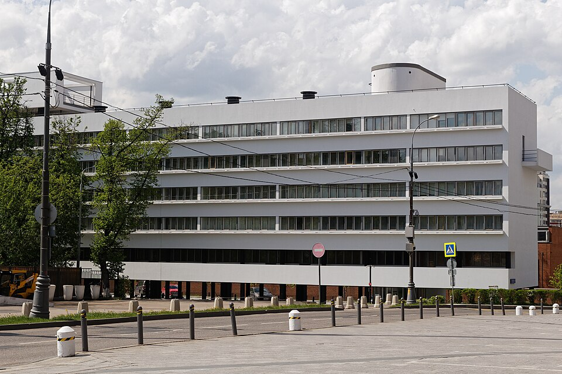

Дом Наркомфина
Дом Наркомфи́на — один из знаковых памятников архитектуры советского авангарда и конструктивизма. Построен в 1928—1930 годах по проекту архитекторов Моисея Гинзбурга, Игнатия Милиниса и инженера Сергея Прохорова для работников Народного комиссариата финансов СССР (Наркомфина). Автор замысла дома — М. Я. Гинзбург. Дом находится в Москве по адресу: Новинский бульвар, дом 25, корпус 1.
«Опытный дом переходного типа».

С 1980-х годов дом находился в аварийном состоянии, был трижды включён в список «100 главных зданий мира, которым грозит уничтожение». В 1986 начато исследование и работа над проектом реставрации дома по инициативе Владимира Гинзбурга; в 1998 году проект отмечен первой премией фестиваля «Зодчество». В 2016—2020 годах дом отреставрирован по проекту АБ «Гинзбург Архитектс». Результаты исследования и реставрации опубликованы. Сейчас Дом Наркомфина — и памятник архитектуры, и жилой дом.
В 2021 году Музей современного искусства «Гараж» инициировал масштабное исследование Дома Наркомфина, в том числе истории жизни его создателей и обитателей на протяжении почти ста лет. Полученное знание становится основой экскурсионных маршрутов, публикаций, разнообразных публичных и просветительских проектов, выстроенных вокруг легендарного дома. Помимо этого, для жильцов дома, патронов Музея и владельцев карт GARAGE доступно кафе Дома Наркомфина, а на первом этаже жилого корпуса открылся книжный магазин.
История создания дома Наркомфина
ОСА и Стройком
Дом Наркомфина, или 2-й дом Совнаркома (СНК) РСФСР, стал одним из экспериментальных домов, построенных по результатам теоретических исследований Секции типизации Стройкома РСФСР, созданной по инициативе М. Я. Гинзбурга и работавшей под его руководством в 1928—1929 годы (в работе также участвовали входившие в объединение ОСА М. О. Барщ, В. Н. Владимиров, А. Л. Пастернак, Г. Р. Сум-Шик). Как сказано в монографии Йоганнеса Крамера «Das Narkomfin Kommunehaus In Moskau 1928—2012», «аналогичные устремления существовали в то же время и в Германии, где этими вопросами занимался Исследовательский институт экономической эффективности в строительстве и жилищном хозяйстве (RfG), хотя полученные им результаты были менее радикальными и менее призрачными».
Состав жилого комплекса
В проектной документации дом именовался 2-м домом СНК. Согласно проекту, комплекс должен был состоять из четырёх корпусов:
- жилого, на 50 семей и приблизительно 200 человек (построен);
- коммунального с кухней, двумя столовыми — крытой внутри и летней на крыше, а также спортзалом и библиотекой (построен, кухня работала в 1930-е годы, продавая еду на вынос; столовая не заработала);
- отдельное круглое в плане здание детского сада с яслями планировалось в центральной части парка (не реализовано; к 1934 году детский сад разместился в коммунальном корпусе; в книге «Жилище» Гинзбург писал: «вся свободная площадь коммунального корпуса занята детским садом»; просуществовал до 1941 года);
- «служебный двор», включающий механическую прачечную, сушилку и гараж, был обращён к Новинскому бульвару (реализован; прачечная функционировала, она обслуживала жильцов в 1930-е годы).